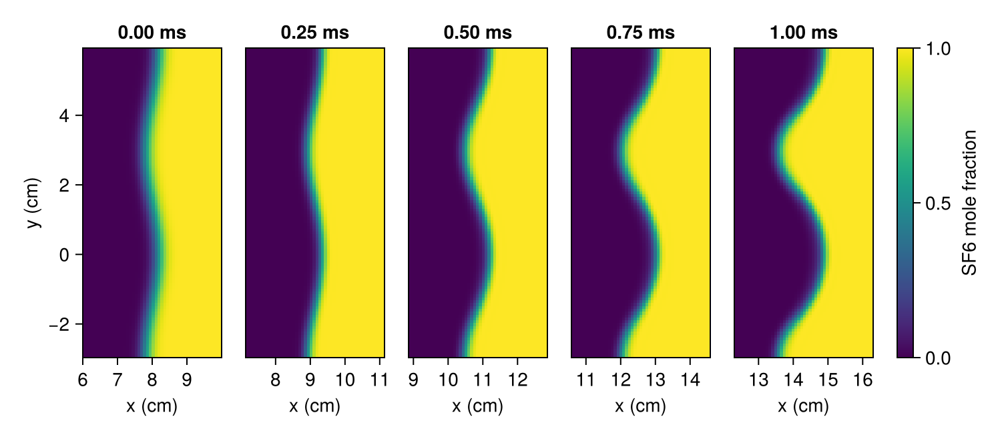
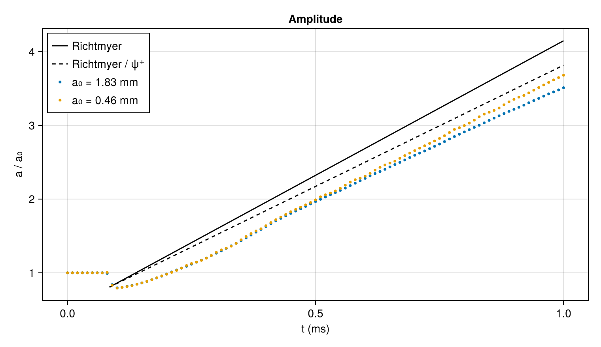

Richtmyer–Meshkov instability
A shock that crosses a rippled interface between two gases leaves the ripple growing. Where the interface is tilted, the pressure jump of the shock and the density jump of the interface are not aligned, and the shock deposits vorticity along the interface. In the flow this vorticity induces, the heavy gas penetrates the light one in spikes and the light gas the heavy one in bubbles. Richtmyer predicted the growth in 1960 and Meshkov observed it in a shock tube in 1969. The instability is a source of mixing between the shell and the fuel of inertial confinement fusion capsules and between the layers of a supernova's ejecta.
Richtmyer took the growth of a small ripple of amplitude $a$ and wavenumber $k$ under gravity $g$ between two incompressible fluids, $d^2 a/dt^2 = k A g a$, and replaced the gravity with an impulse: the velocity jump $\Delta u$ that the shock gives the interface. The ripple then grows at the constant rate
\[\frac{da}{dt} = k A^+ \Delta u\, a_0^+ ,\]
where $A^+ = (\rho_2 - \rho_1)/(\rho_2 + \rho_1)$ is the Atwood number of the two gases after the shock has compressed them, gas 1 being the one the shock comes from, and $a_0^+$ is the amplitude just after the shock has passed. The shock reaches the parts of the interface that bulge toward it before the parts that recede, and in between the parts already struck move on at $\Delta u$, so the shock compresses the amplitude $a_0$ to $a_0^+ = (1 - \Delta u/W)\,a_0$, with $W$ the shock speed. With these post-shock quantities, Richtmyer's model is the usual one for a shock traveling from the light gas into the heavy one, where the ripple grows without changing sign. For a shock traveling from heavy to light the ripple reverses, and Meyer and Blewett (1972) found that the mean of the amplitudes before and after the shock describes the growth better.
Richtmyer's interface is sharp, and one between two gases is not. Collins and Jacobs (2002) formed theirs without a membrane: the two gases flowed toward each other in a vertical shock tube and left through slots in its walls, meeting across a layer about 5 mm thick, and a gentle rocking of the tube rippled the layer. With a shock of Mach number 1.21 from air into sulfur hexafluoride, they measured the early growth of the ripple and found it in agreement with Richtmyer's rate once that rate was reduced for the thickness of the layer.
This tutorial repeats their experiment. It compares the growth rate of the ripple with Richtmyer's, with the reduction for the layer that Collins and Jacobs applied, and with a second model of the layer, and follows the ripple until its growth slows. It is the first two-dimensional calculation of the tutorials.
using CompactLES # re-exports MPI
using CompactLES.Regions
MPI.Initialized() || MPI.Init(threadlevel=:funneled)
using CairoMakie
using LinearAlgebra
using Printf
CairoMakie.activate!(type = "png")Gases and shock
The SF6 is pure. The light gas is air carrying 25% acetone by volume, the tracer whose fluorescence under a laser sheet imaged the interface in the experiment. The gases start at 0.926 bar, the atmospheric pressure of the laboratory, and 296 K. IdealMixture holds the heat capacity of each species at its room-temperature value; with the temperature-dependent heat capacities of Nasa9Mixture the growth rate of Richtmyer's model below changes by 0.4%.
shock_jump gives the state behind the incident shock and its speed $W$. When the shock reaches the interface, the shocked air meets SF6 at rest, and riemann_interface solves that problem: the interface moves at the contact velocity $u^*$, which is $\Delta u$ since the gas ahead of the shock was at rest; a shock is transmitted into the SF6 and another reflected back into the air; and the states on either side of the interface give $A^+$.
eos = IdealMixture(["Air", "C3H6O,acetone", "SF6"])
p0, T0 = 92_555.0, 296.0
air = Prim(Y = mass_fractions(eos, "Air" => 0.75, "C3H6O,acetone" => 0.25;
basis = :mole), p = p0, T_ion = T0)
sf6 = Prim(Y = mass_fractions(eos, "SF6" => 1.0; basis = :mole), p = p0, T_ion = T0)
incident = shock_jump(eos, air, 1.21)
impact = riemann_interface(eos, incident.post, sf6)
W, du = incident.shock_speed, impact.u_star
density(state) = thermodynamic_state(eos, state).rho
atwood(light, heavy) = (density(heavy) - density(light)) / (density(heavy) + density(light))
A_post = atwood(impact.left, impact.right)
compression = 1 - du / W
@printf("incident shock %.1f m/s; gas behind it %.1f m/s, %.1f K\n", W,
incident.velocity, incident.post.T_ion)
@printf("interface %.1f m/s; reflected shock %.1f m/s (%s); transmitted %.1f m/s (%s)\n",
du, impact.left_speed, impact.left_wave, impact.right_speed, impact.right_wave)
@printf("Atwood number %.3f before the shock, %.3f after; a₀⁺/a₀ = %.3f\n",
atwood(air, sf6), A_post, compression)incident shock 353.8 m/s; gas behind it 99.3 m/s, 323.1 K
interface 68.7 m/s; reflected shock -224.0 m/s (shock); transmitted 176.4 m/s (shock)
Atwood number 0.602 before the shock, 0.623 after; a₀⁺/a₀ = 0.806Latini, Schilling and Don (2007), who modeled this experiment with a high-order shock-capturing code, list Atwood numbers of 0.604 and 0.627 for it and an amplitude compression of 0.807.
Ripple
The ripple has a wavelength of 59.33 mm and an amplitude of 1.83 mm, those of the experiment at Mach 1.21, for which $ka_0$ is 0.19. A second run with a quarter of that amplitude, $ka_0 = 0.05$, stays closer to the linear theory throughout. Richtmyer's rate is proportional to $a_0$:
lambda = 0.05933
k = 2pi / lambda
amplitudes = [1.83e-3, 1.83e-3 / 4]
richtmyer_rate = k * A_post * du * compression
for a0 in amplitudes
@printf("a₀ = %.2f mm: ka₀ = %.3f, da/dt = %.2f m/s\n", 1e3a0, k * a0,
richtmyer_rate * a0)
enda₀ = 1.83 mm: ka₀ = 0.194, da/dt = 6.68 m/s
a₀ = 0.46 mm: ka₀ = 0.048, da/dt = 1.67 m/sDiffuse interface
Duff, Harlow and Hirt (1962) described a layer formed by diffusion between two gases with the density profile
\[\rho(x) = \bar\rho \left[ 1 + A \operatorname{erf}\!\left(\frac{\sqrt{\pi}\,x}{\delta}\right) \right],\]
whose thickness $\delta$ is the density difference divided by the largest density gradient. Under gravity, a ripple of the layer grows as $e^{nt}$ with $n^2 = Agk/\psi$, where the growth reduction factor $\psi$ depends on $k\delta$ and $A$. It is an eigenvalue of Chandrasekhar's linearized equation for the velocity $w(x)$ normal to the layer,
\[\frac{d}{dx}\left(\rho \frac{dw}{dx}\right) - k^2 \rho w = -\frac{g k^2}{n^2}\, \frac{d\rho}{dx}\, w ,\]
with $w$ vanishing far from the layer: the fastest-growing mode has the smallest $\psi$. When the two densities differ little, $\psi$ approaches $1 + k\delta/2$; for the gases here it must be computed. Brouillette and Sturtevant (1994) carried the reduction over to the Richtmyer–Meshkov instability as Richtmyer did, replacing the gravity with the impulse of the shock:
\[\frac{da}{dt} = \frac{k A^+ \Delta u\, a_0^+}{\psi^+} ,\]
with $\psi^+$ evaluated for the layer after the shock. This is the rate with which Collins and Jacobs compared their measurements.
The function below solves the equation on a grid in units of $1/k$, where it is a tridiagonal system, by inverse iteration. The layer's density gradient is a Gaussian, and the density its integral:
function layer_operator(A, kdelta; L = 25.0, n = 20_001)
x = range(-L, L; length = n)
h = step(x)
drho = @. 2A / kdelta * exp(-pi * x^2 / kdelta^2) # rho runs from 1 - A to 1 + A
rho = 1 - A .+ h .* (cumsum(drho) .- (drho .+ drho[1]) ./ 2)
face = (rho[1:end-1] .+ rho[2:end]) ./ 2
M = Tridiagonal(face[2:end-1] ./ h^2,
-(face[1:end-1] .+ face[2:end]) ./ h^2 .- rho[2:end-1],
face[2:end-1] ./ h^2)
return M, drho[2:end-1], x[2:end-1]
end
function growth_reduction(A, kdelta)
M, drho, x = layer_operator(A, kdelta)
w = exp.(-abs.(x))
nu = 0.0
for _ in 1:100
v = M \ (-drho .* w) # nu is n²/(gk), with k = 1
nu = dot(v, drho .* w) / dot(w, drho .* w)
w = v ./ maximum(abs, v)
end
return A / nu
end
delta = 5e-3
@printf("ψ = %.3f before the shock\n", growth_reduction(atwood(air, sf6), k * delta))ψ = 1.183 before the shockLatini, Schilling and Don list $\psi = 1.17$ for the experiment's layer before the shock.
The shock compresses the layer as it compresses the gases on either side. This is not the compression of the amplitude, which comes from the different times at which the shock strikes the crests and the troughs: a layer that the shock crosses along its thickness shrinks by the density ratio of the shocked gas. That ratio is 1.54 for the air and 1.64 for the SF6, and taking the mean for the layer,
ratio_air = density(impact.left) / density(air)
ratio_sf6 = density(impact.right) / density(sf6)
delta_post = delta / ((ratio_air + ratio_sf6) / 2)
psi_post = growth_reduction(A_post, k * delta_post)
@printf("δ⁺ = %.2f mm, ψ⁺ = %.3f, da/dt = %.3f k A⁺ Δu a₀⁺\n", 1e3delta_post,
psi_post, 1 / psi_post)δ⁺ = 3.15 mm, ψ⁺ = 1.110, da/dt = 0.901 k A⁺ Δu a₀⁺Channel
The interface lies across the channel at $x = x_i + a_0 \cos ky$. A second grid dimension resolves $y$; only $z$ is collapsed. The ripple is symmetric about $y = 0$ and $y = \lambda/2$, the lines of its crests and troughs, and so is the flow after the shock, so the channel is half a wavelength tall and SymmetryPlaneBC closes it at both of those lines. Periodic faces a full wavelength apart would hold the same flow on twice as many points. A symmetry plane lies half a cell beyond the last row of nodes.
Slab accepts a function of the two other coordinates as a bound, here $(y, z) \mapsto x_i + a_0\cos ky$, and the slab beyond that bound is filled with SF6. A Layer gives that slab its own transition: with profile = :erf, Layers blends the gases by volume along an error function across the bound, and a width of $\delta/\sqrt\pi$ makes the density the profile of Duff, Harlow and Hirt with $\delta = 5$ mm. A second slab holds the shocked air behind the shock at $x_s$, with the default transition, three cells wide.
The shock starts at $x_s = 5$ cm, 3 cm ahead of the interface at $x_i = 8$ cm, far enough that the two transitions do not overlap, and reaches the interface at 0.08 ms. The channel is 25 cm long, so that the transmitted shock is still inside it when the run ends at 1 ms.
x_shock, x_interface, Lx = 0.05, 0.08, 0.25
t_impact = (x_interface - x_shock) / WThe shocked air flows into the channel at the speed printed above. The inflow face at $x = 0$ is an NSCBCInflowBC: there the velocity, temperature and composition of the entering gas are relaxed toward those of a given state, and waves traveling upstream leave through the face. The reflected shock leaves through it at 0.35 ms, after which the entering gas is the gas behind the reflected shock, so the inflow's target, a function of position and time, switches to that state then. Without the switch the interface speeds up after 0.7 ms. The far end is an NSCBCOutflowBC, where the pressure is relaxed toward the ambient pressure and waves leave.
t_reflected = t_impact + x_interface / abs(impact.left_speed)
inflow_state(x, y, z, t) = t < t_reflected ? incident.post : impact.left
problem(a0) = Problem(
name = "air/SF6 Richtmyer–Meshkov",
eos = eos,
domain = ((0.0, Lx), (0.0, lambda / 2), (0.0, 1.0)),
bcs = ((NSCBCInflowBC(incident.post; target = inflow_state),
NSCBCOutflowBC(pinf = p0)),
(SymmetryPlaneBC(), SymmetryPlaneBC()),
PeriodicBC()),
ic = Layers(air,
Layer(Slab(1, lo = (y, z) -> x_interface + a0 * cos(k * y)), sf6;
width = delta / sqrt(pi)),
Slab(1, hi = x_shock) => incident.post; profile = :erf),
)Grid and run
The grid has 36 rows of nodes across the half wavelength and square cells, 0.82 mm on a side, which makes 303 columns along the channel. The numerics are the defaults. A snapshot of the mole fractions and the density every 10 µs, the first at the start, records the interface.
ny = 36
nx = round(Int, Lx / (lambda / 2 / ny))
function simulate(a0)
solver, Q = setup(problem(a0), Numerics(n_global = (nx, ny, 1)))
snapshots = []
record = Callback(EveryTime(10e-6), function (solver, Q)
push!(snapshots, field_snapshot(solver, Q; fields = (:X, :rho)))
nothing
end)
run!(solver, Q; tfinal = 1e-3, nmax = 10_000, callback = record)
return snapshots
end
runs = [simulate(a0) for a0 in amplitudes]
(nx, ny)(303, 36)Interface
The interface in each row of nodes is where the mole fraction of SF6 first rises through one half, found by linear interpolation between the nodes on either side:
function interface_positions(snap)
x = snap.coords[1]
map(1:ny) do j
X = snap[:X][:, j, 1, 3] # the SF6 mole fraction along row j
i = findfirst(>(0.5), X)
x[i-1] + (0.5 - X[i-1]) / (X[i] - X[i-1]) * (x[i] - x[i-1])
end
endThe panels show the larger ripple every 0.25 ms, in a window 4 cm long centered on the mean interface position. Mirrored across both planes, the half wavelength becomes one and a half, so that a whole bubble, centered on $y = 0$, and a whole spike, centered on $y = \lambda/2$, are in view:
fig = Figure(size = (760, 420))
for (col, t) in enumerate(0:0.25e-3:1e-3)
snap = runs[1][argmin([abs(s.t - t) for s in runs[1]])]
x, y = snap.coords[1], snap.coords[2]
center = sum(interface_positions(snap)) / ny
window = findall(abs.(x .- center) .< 0.025)
X = snap[:X][window, :, 1, 3]
ax = Axis(fig[1, col], width = 104, height = 104 * 1.5lambda / 0.04, # to scale
title = @sprintf("%.2f ms", 1e3t), xlabel = "x (cm)",
ylabel = col == 1 ? "y (cm)" : "")
hm = heatmap!(ax, 100 .* x[window], 100 .* [-reverse(y); y; lambda .- reverse(y)],
[reverse(X, dims = 2) X reverse(X, dims = 2)],
colormap = :viridis, colorrange = (0, 1))
limits!(ax, 100 .* (center - 0.02, center + 0.02), 100 .* (-lambda / 2, lambda))
col > 1 && hideydecorations!(ax)
col == 5 && Colorbar(fig[1, 6], hm, label = "SF6 mole fraction")
end
resize_to_layout!(fig)
fig
The shock arrives from the left and compresses the ripple, which then grows: the SF6 reaches into the air around $y = \lambda/2$, the spike, and the air into the SF6 around $y = 0$, the bubble. By 1 ms the spike is narrower than the bubble.
Layer
Along the row of nodes next to $y = 0$ the interface crosses the channel square to it, and the density there shows the layer. Its thickness is the density difference across the layer divided by the largest gradient between neighboring nodes:
function layer_thickness(snap)
x, rho = snap.coords[1], snap[:rho][:, 1, 1]
near = abs.(x .- interface_positions(snap)[1]) .< 0.009
xs, r = x[near], rho[near]
return (maximum(r) - minimum(r)) / maximum(diff(r) ./ diff(xs))
end
times = [snap.t for snap in runs[1]]
thickness = [layer_thickness(runs[2][argmin(abs.(times .- t))])
for t in (0.4e-3, 0.7e-3, 1e-3)]
@printf("δ⁺ = %.2f, %.2f and %.2f mm at 0.4, 0.7 and 1.0 ms\n", 1e3 .* thickness...)
delta_calc = sum(thickness) / length(thickness)δ⁺ = 3.56, 3.47 and 3.61 mm at 0.4, 0.7 and 1.0 msThe layer leaves the shock about 3.5 mm thick, a tenth thicker than the estimate above, and keeps that thickness. On a grid of 48 rows it is 3.1 mm, the estimate. On a grid of 24 rows the compressed layer would span 2.5 cells; the artificial diffusivity, which acts where the grid does not resolve a variation, spreads it to 4.5 mm by 0.4 ms and 4.9 mm by 1 ms, and the thicker layer grows 2% more slowly than the one here.
Growth
The amplitude is half the distance between the interface in the row next to $y = 0$ and in the row next to $y = \lambda/2$, each half a cell from its plane. Divided by its initial value, it is compared with Richtmyer's model, in which the amplitude drops to $a_0^+$ when the shock reaches the interface and grows at the constant rate from there, and with the same model reduced by $\psi^+$:
amplitude(snap) = (η = interface_positions(snap); (η[1] - η[end]) / 2)
histories = [amplitude.(run) for run in runs]
fig = Figure(size = (760, 440))
ax = Axis(fig[1, 1], xlabel = "t (ms)", ylabel = "a / a₀", title = "Amplitude")
ts = range(t_impact, 1e-3; length = 100)
lines!(ax, 1e3 .* ts, compression .* (1 .+ k * A_post * du .* (ts .- t_impact)),
color = :black, label = "Richtmyer")
lines!(ax, 1e3 .* ts, compression .* (1 .+ k * A_post * du .* (ts .- t_impact) ./ psi_post),
color = :black, linestyle = :dash, label = "Richtmyer / ψ⁺")
for (a0, history, color) in zip(amplitudes, histories, Makie.wong_colors())
scatter!(ax, 1e3 .* times, history ./ history[1]; color, markersize = 5,
label = @sprintf("a₀ = %.2f mm", 1e3a0))
end
axislegend(ax, position = :lt)
fig
While the shock crosses the interface, the amplitude falls to
for (a0, history) in zip(amplitudes, histories)
@printf("a₀ = %.2f mm: %.3f a₀\n", 1e3a0, minimum(history) / history[1])
enda₀ = 1.83 mm: 0.796 a₀
a₀ = 0.46 mm: 0.792 a₀close to the compression factor $a_0^+/a_0 = 0.806$. In both models the growth starts at full rate at the moment of impact. In the calculation the rate is zero at impact, rises over about 0.3 ms to briefly exceed the value it then keeps, and settles by 0.4 ms, so the calculated amplitudes fall behind the lines from the start. From 0.4 ms on, straight-line fits over three intervals give these rates, as fractions of Richtmyer's, and this velocity of the small ripple's mean interface position:
function fitted_rate(history, t1, t2)
sel = findall(t -> t1 - 1e-9 <= t <= t2 + 1e-9, times)
t, a = times[sel], history[sel]
tm, am = sum(t) / length(t), sum(a) / length(a)
return sum((t .- tm) .* (a .- am)) / sum((t .- tm) .^ 2)
end
println(" 0.4–0.7 ms 0.7–1.0 ms 0.4–1.0 ms ka at 0.4, 0.7, 1.0 ms")
for (a0, history) in zip(amplitudes, histories)
rates = [fitted_rate(history, t1, t2) / (richtmyer_rate * history[1])
for (t1, t2) in ((0.4e-3, 0.7e-3), (0.7e-3, 1e-3), (0.4e-3, 1e-3))]
ka = [k * history[argmin(abs.(times .- t))] for t in (0.4e-3, 0.7e-3, 1e-3)]
@printf("a₀ = %.2f mm %9.3f %11.3f %11.3f %10.2f %5.2f %5.2f\n", 1e3a0, rates...,
ka...)
end
mean_position = [sum(interface_positions(snap)) / ny for snap in runs[2]]
@printf("interface %.1f m/s, contact velocity %.1f m/s\n",
fitted_rate(mean_position, 0.4e-3, 1.0e-3), du) 0.4–0.7 ms 0.7–1.0 ms 0.4–1.0 ms ka at 0.4, 0.7, 1.0 ms
a₀ = 1.83 mm 0.871 0.842 0.858 0.31 0.50 0.68
a₀ = 0.46 mm 0.916 0.938 0.928 0.08 0.13 0.18
interface 68.8 m/s, contact velocity 68.7 m/sThe interface moves at the contact velocity to within 0.2%. The smaller ripple grows at 0.93 of Richtmyer's rate, rising slowly from 0.92 to 0.94 over the run: 7% short of the sharp interface and 3% beyond the reduction of Collins and Jacobs for the estimated layer. Evaluated for the layer the calculation carries, the mean of the three thicknesses above, the reduction is
psi_calc = growth_reduction(A_post, k * delta_calc)
@printf("ψ⁺ = %.3f for δ⁺ = %.2f mm: da/dt = %.3f k A⁺ Δu a₀⁺\n", psi_calc,
1e3delta_calc, 1 / psi_calc)ψ⁺ = 1.124 for δ⁺ = 3.54 mm: da/dt = 0.889 k A⁺ Δu a₀⁺and the calculation grows 4% faster.
The reduction $1/\psi$ is the growth of the layer's fastest Rayleigh–Taylor mode, carried over to an impulse. A shock does not select that mode: it deposits vorticity wherever the layer's density gradient crosses its pressure jump, in proportion to that gradient, and the interface then moves at the velocity this vorticity induces at the center of the layer. In the incompressible limit that velocity is the solution of the same equation with the impulse on its right-hand side,
\[\frac{d}{dx}\left(\rho \frac{dw}{dx}\right) - k^2 \rho w = -k^2 \Delta u\, a_0^+\, \frac{d\rho}{dx} ,\]
evaluated at $x = 0$; for a sharp interface it gives Richtmyer's rate.
function impulsive_reduction(A, kdelta)
M, drho, x = layer_operator(A, kdelta)
w = M \ (-drho)
return w[argmin(abs.(x))] / A
end
@printf("impulsive response for δ⁺ = %.2f mm: da/dt = %.3f k A⁺ Δu a₀⁺\n",
1e3delta_calc, impulsive_reduction(A_post, k * delta_calc))impulsive response for δ⁺ = 3.54 mm: da/dt = 0.915 k A⁺ Δu a₀⁺The small ripple grows within about 1% of this rate. The remaining difference and the slow rise of the rate lie outside both models, which leave out the compressibility of the flow after the shock.
The larger ripple grows at 0.87 of Richtmyer's rate while $ka$ rises from 0.3 to 0.5, and at 0.84 while $ka$ rises to 0.7. Its slowing is nonlinear. In linear theory $a/a_0$ does not depend on $a_0$, and the two runs part as $ka$ grows. Linear theory also keeps the ripple sinusoidal, with the bubble and the spike equally far from the mean interface position, but at 1 ms the spike of the larger ripple is farther from it than the bubble:
for (a0, run) in zip(amplitudes, runs)
η = interface_positions(run[end])
mean = sum(η) / ny
@printf("a₀ = %.2f mm: spike %.2f mm, bubble %.2f mm from the mean, ratio %.2f\n",
1e3a0, 1e3(mean - η[end]), 1e3(η[1] - mean), (mean - η[end]) / (η[1] - mean))
enda₀ = 1.83 mm: spike 7.15 mm, bubble 5.67 mm from the mean, ratio 1.26
a₀ = 0.46 mm: spike 1.74 mm, bubble 1.62 mm from the mean, ratio 1.07The excess of the ratio over one is proportional to $ka$ at 1 ms, as it is for a difference between spike and bubble that enters at second order in $ka$.
What this checks
- After a shock of Mach 1.21 from air into SF6, in the configuration of the experiment of Collins and Jacobs, the interface moves at the contact velocity of the Riemann problem, and the amplitude of the ripple drops to Richtmyer's compressed amplitude.
- The shock compresses the 5 mm layer by the density ratio of the shocked gases, to the 3.1 mm a fine grid holds; a grid that does not resolve the compressed layer widens it.
- A small ripple grows at a rate 7% below Richtmyer's. The reduction of Duff, Harlow and Hirt for the layer accounts for most of the difference, and the impulsive response of the layer for all but 1%.
- A larger ripple, with $ka$ rising from 0.3 to 0.7, grows more slowly than the small one relative to Richtmyer's rate, and its spike and bubble become unequal in proportion to $ka$.
This page was generated using Literate.jl.